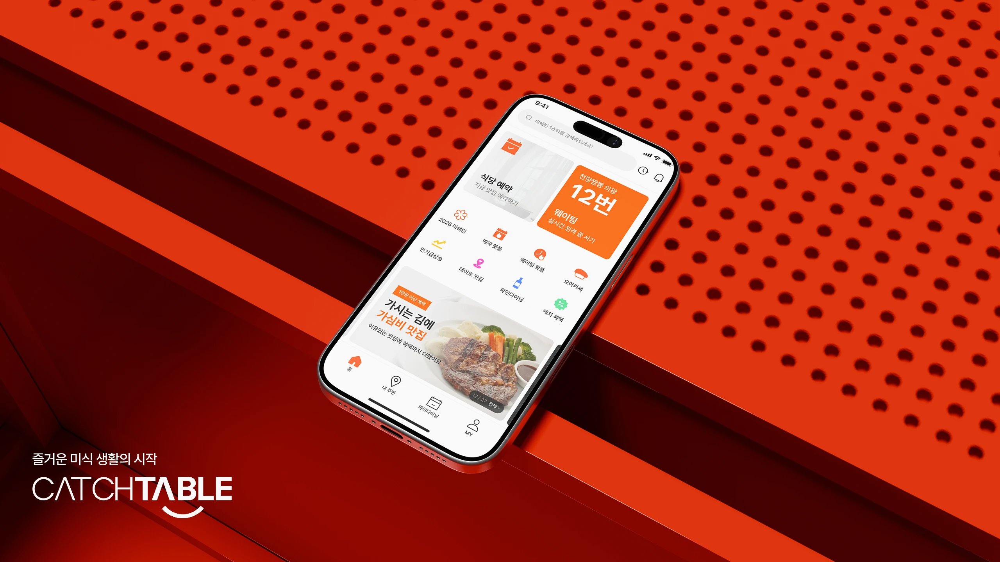

CATCHTABLE
맛집 탐색부터 예약까지의 경험을 개선한 캐치테이블 리디자인 프로젝트입니다. 사용자의 탐색 흐름과 예약 과정을 분석하고, 정보의 우선순위와 화면 구성을 정리해 원하는 식당을 쉽게 찾고 편리하게 예약할 수 있도록 제안합니다.
A CATCHTABLE redesign project that improves the experience from restaurant discovery to reservation. By analyzing how users explore restaurants and book tables, I refined the information hierarchy and screen layouts to help them find the right restaurant and make reservations with ease.
- TYPE
- UX/UI Redesign
- OUTPUT
- Figma
- TERM
- 2026.03 - 06
PROJECT PROTOTYPECATCHTABLE